This function makes prettier histograms. Histograms are created using hist with more flexibility for control over the axes. Unlike most functions in prettyGraphics, pretty_hist does not use pretty_axis to draw axes. Instead, by default, the 'breaks' vector computed by hist is used for the x axis, but every xnth value can be selected for inclusion as an axis tick mark. This ensures that axis breaks and tick marks are always aligned. Alternatively, x axis elements can be controlled using xaxis. The default y axis is defined with pretty based on a named list of parameters provided by the user (e.g. including the approximate number of 'pretty' breaks). Alternatively, the y axis can be implemented via yaxis as for the x axis. Axis titles can be added using xlab, ylab or main or via mtext via mtext_args which offers more control.
pretty_hist( x, freq = TRUE, xn = 1, ypretty = list(n = 5), xaxis = list(), yaxis = list(), xlim = NULL, ylim = NULL, xlab = deparse(substitute(x)), ylab = ifelse(freq, "Frequency", "Density"), main = "", control_axis = list(las = TRUE), control_sci_notation = list(), control_digits = NULL, mtext_args = list(), ... )
| x | A numeric vector for which to create a histogram. |
|---|---|
| freq | A logical input which defines whether or not to create a histogram of counts or probability densities. |
| xn | A number which defines the distance between sequential breaks in |
| ypretty | A named list of parameters, passed to |
| xaxis | A named list of elements passed to |
| yaxis | A named list of elements passed to |
| xlim | A vector of two numbers which define the lower and upper x limits of the histogram. |
| ylim | A vector of two numbers which define the lower and upper y limits of the histogram. |
| xlab | The x axis label. This can be added via |
| ylab | The y axis label. This can be added via |
| main | The plot title. This can be added via |
| control_axis, control_sci_notation, control_digits | Additional axis control arguments (see |
| mtext_args | A named list of arguments passed to |
| ... | other parameters passed to |
The function returns a pretty histogram.
Edward Lavender
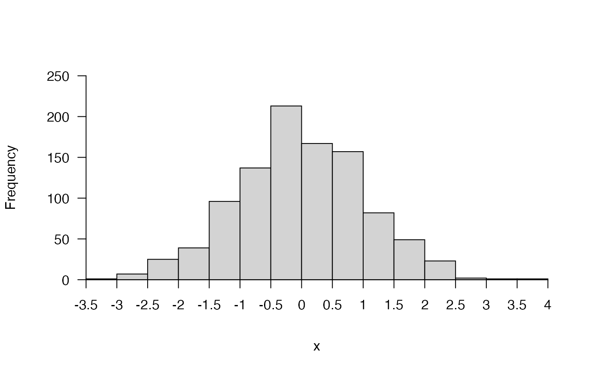#### Example (2) A density plot pretty_hist(x, freq = FALSE)#### Example (3) Axes can be adjusted via xlim, ylim, breaks, # ... xn, ypretty, or xaxis() and yaxis() # pp <- par(mfrow = c(1, 6)) pretty_hist(x, xlim = c(-10, 10), ylim = c(0, 1000))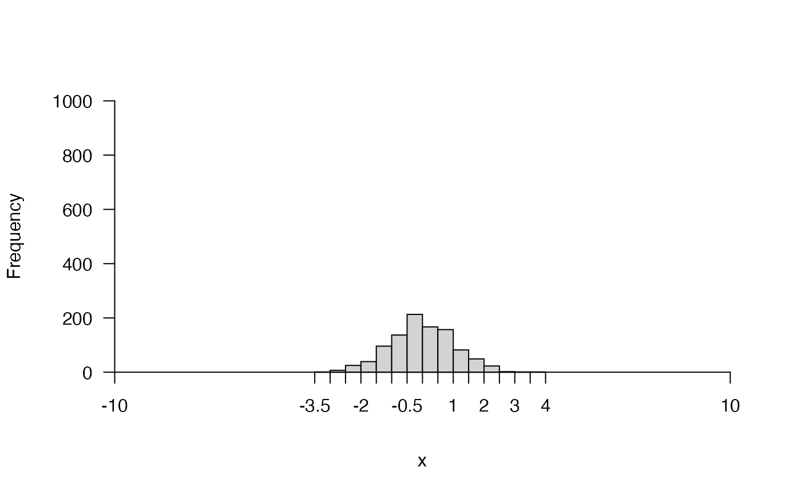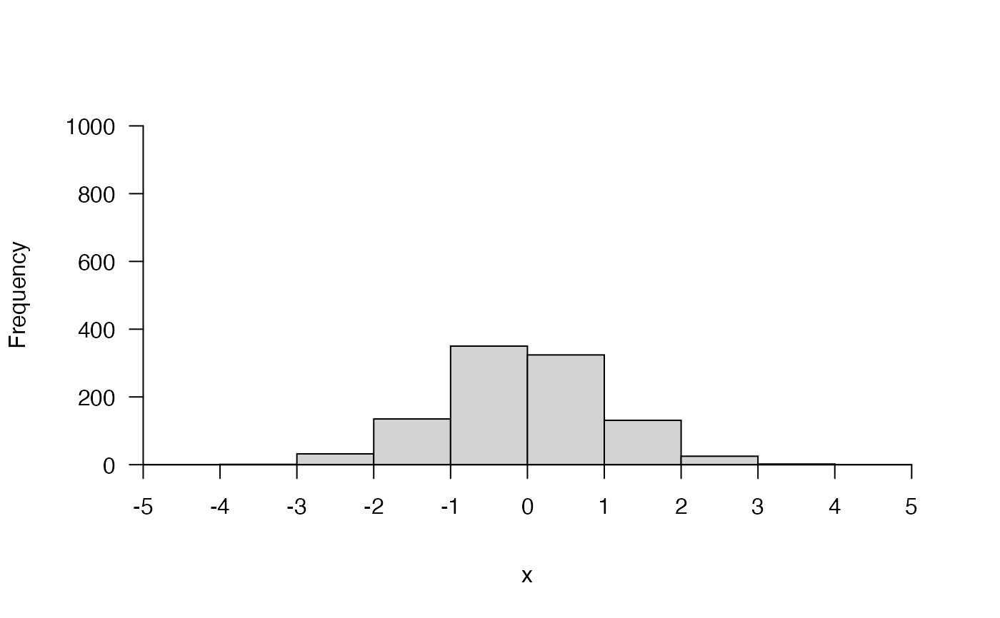pretty_hist(x, xn = 2)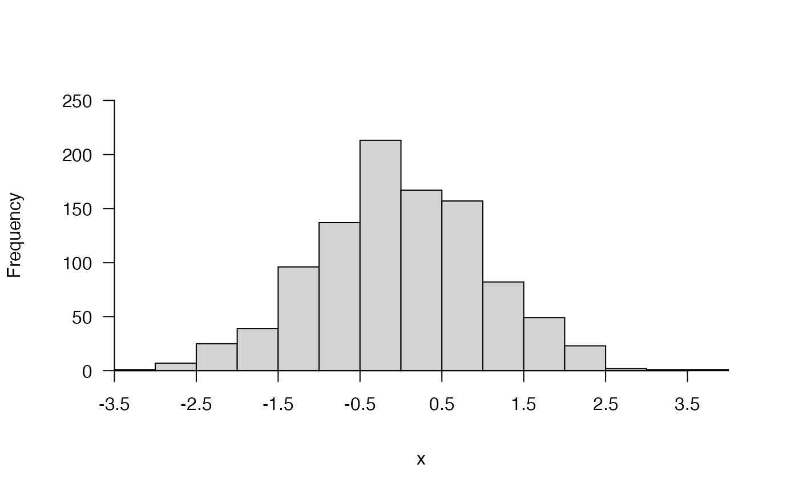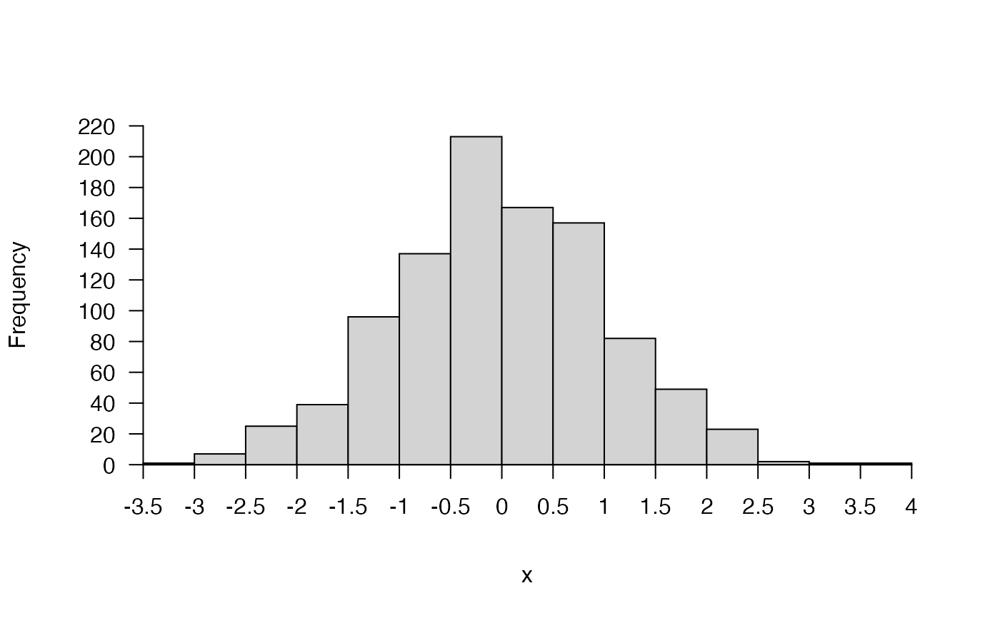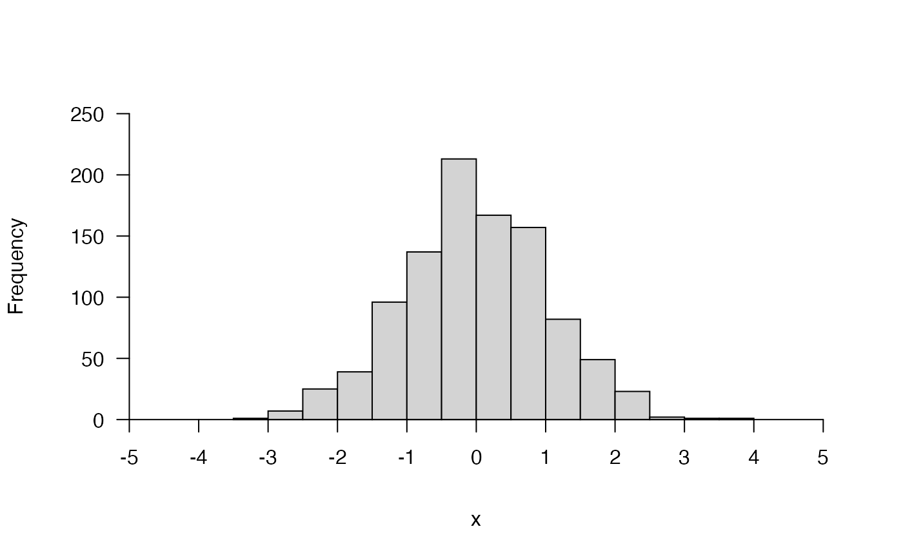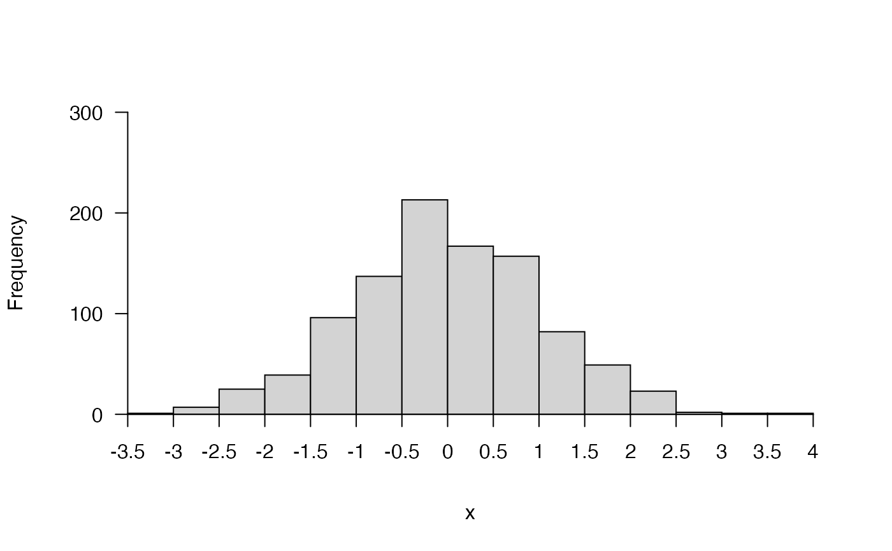# par(pp) #### Example (4) Axis labels can be adjusted via mtext() and mtext_args() pp <- par(mfrow = c(1, 2)) pretty_hist(x, xlab = "xvar", ylab = "F", mtext_args = list()) pretty_hist(x, xlab = "", ylab = "", mtext_args = list( list(side = 1, "x var", line = 2), list(side = 2, "F", line = 2)))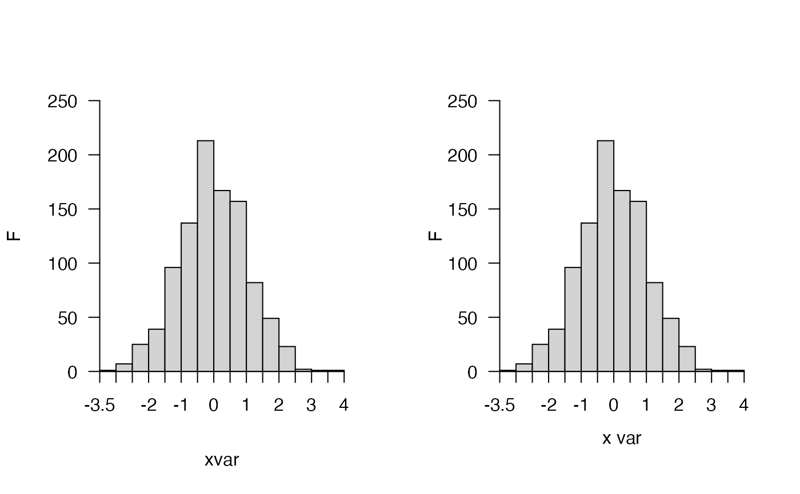par(pp) #### Example (5) Further examples # pp <- par(mfrow = c(4, 2)) # e.g. x <- c(1.466667, 1.500000) pretty_hist(x)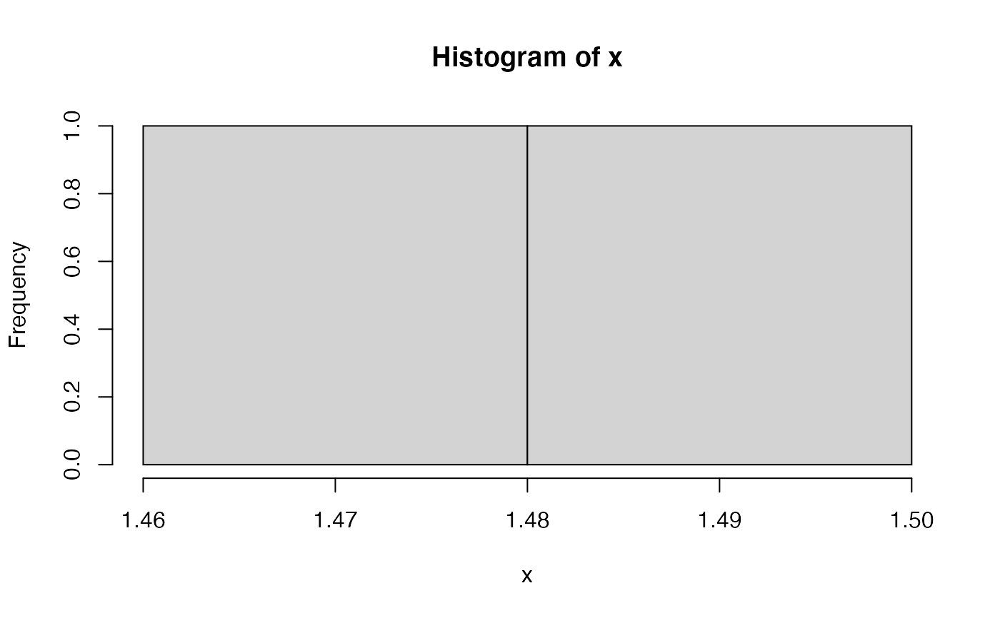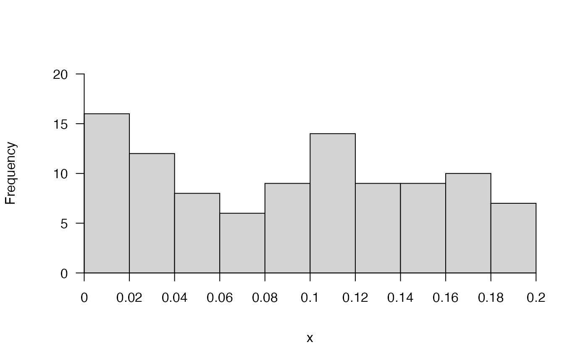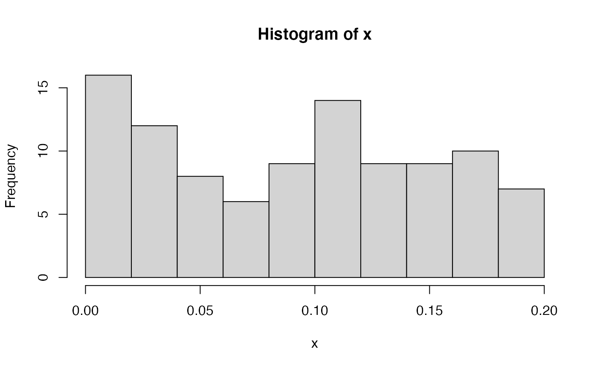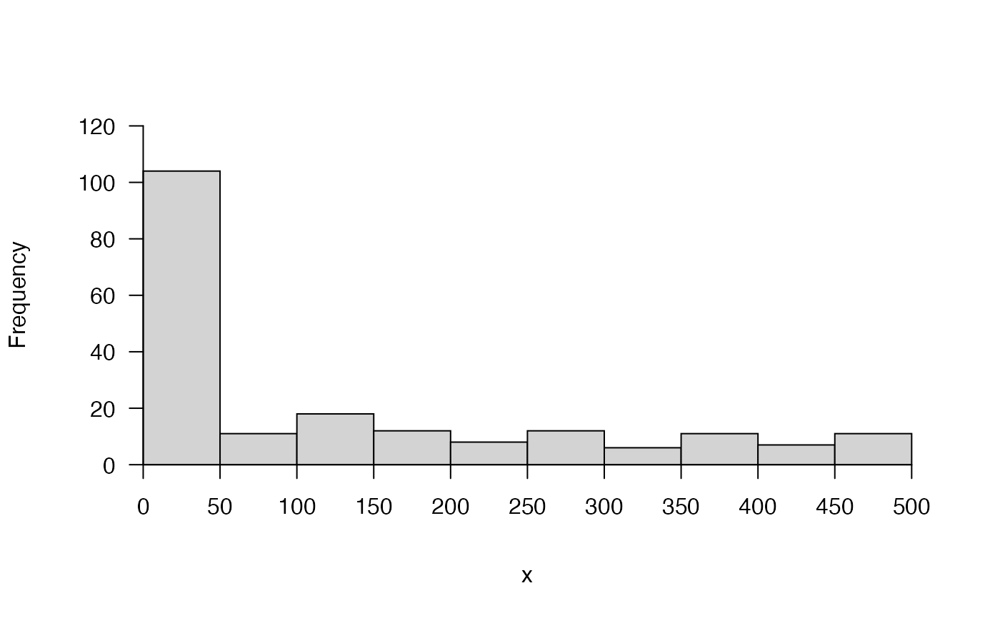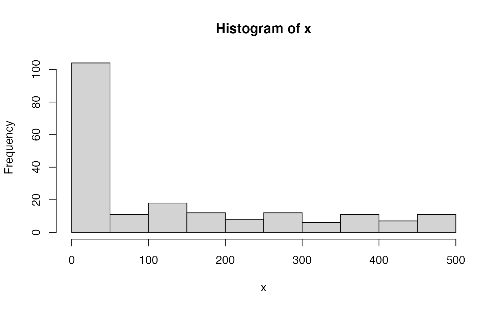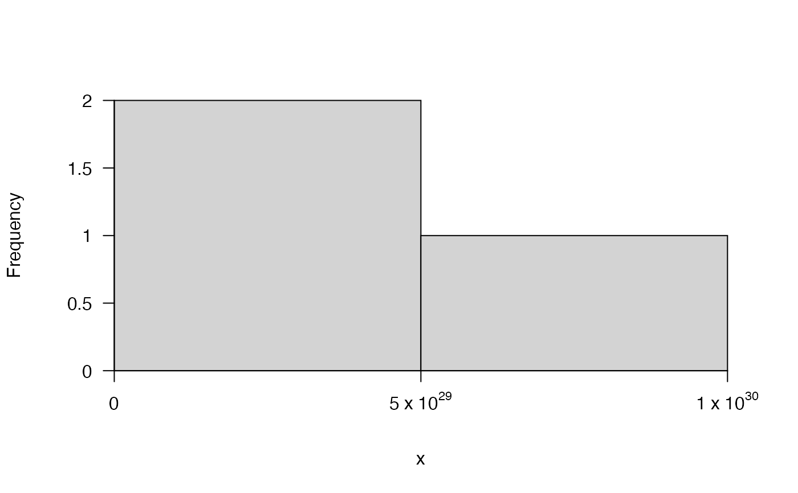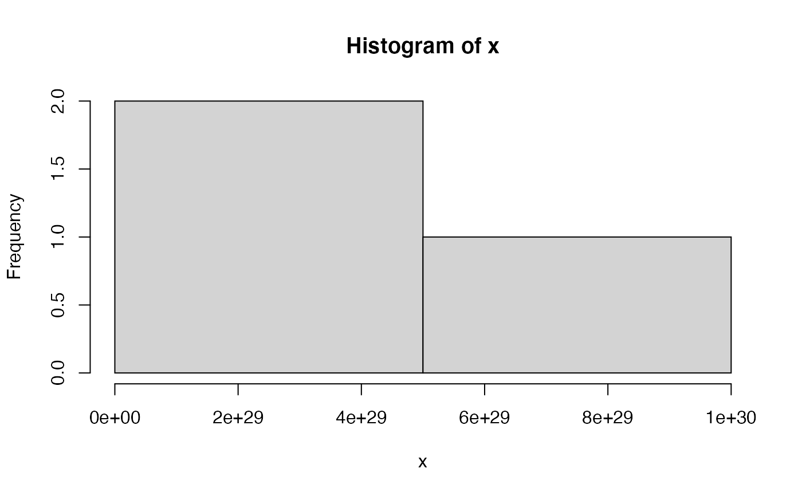# par(pp) #### Example (6) Some examples with dates and times ## Define some time series data x <- seq.Date(as.Date("2016-01-01"), as.Date("2017-01-01"), 1) x <- sample(x, size = 1000, replace = TRUE) ## Set plotting region pp <- par(mfrow = c(2, 2)) ## hist() and pretty_hist() comparison # Note that for times, hist() displays density by default, # ... but freq = FALSE is needed for pretty_hist hist(x, breaks = "months") pretty_hist(x, breaks = "months", freq = FALSE) ## Usually for time series, you need to be explicit about breaks # ... for pretty plots: hist(x, breaks = seq(min(x), max(x), by = "months"), format = "%d-%m", las = 2) pretty_hist(x, breaks = seq(min(x), max(x), by = "months"), xaxis = list(format = "%d-%m", las = 2), freq = FALSE )